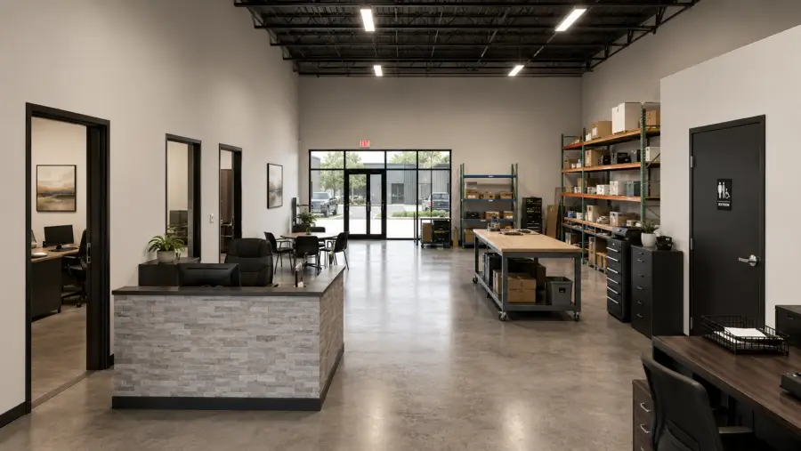

Flex space vs. traditional warehouse: which does your business need?

Short answer: if your business runs on vans and box trucks, meets customers, and needs under ~5,000 SF, you want flex space. If it runs on semi trailers, pallets, and pure storage volume, you want a traditional warehouse. Here's the longer answer, feature by feature.
New to the category? Start with our plain-English guide to what flex space is — this post assumes the basics.
The side-by-side
| Small-bay flex | Traditional warehouse | |
|---|---|---|
| Typical unit size | 1,500–5,000 SF | 10,000–500,000+ SF |
| Loading | Grade-level roll-up doors | Dock-high doors for trailers |
| Office/showroom | Built in, customer-facing | Minimal, added at cost |
| HVAC | Individual per unit | Warehouse usually unconditioned |
| Visibility | Storefront glass, signage, parking in front | Industrial park, no walk-in traffic |
| Lease commitment | Smaller space, right-sized entry point | Larger minimums, longer terms common |
Where flex space wins
Total monthly cost. Flex costs more per square foot — you're paying for finished office, glass, and per-unit HVAC — but you lease a fraction of the footage and skip a separate office lease. One rent check instead of two.
Customer access. A flex unit works as a pickup counter, a showroom, or a client meeting spot. Nobody visits a distribution warehouse.
Truck reality. Most small businesses load a van or a 26-foot box truck, not a 53-foot trailer. A grade-level door is faster and simpler than a dock for that fleet.
Room to start. A first commercial lease at 1,500 SF is a survivable commitment. We wrote a whole guide to choosing between 1,500, 2,000, and 3,000 SF.
Where a traditional warehouse wins
Be honest about these — leasing the wrong category is expensive in both directions:
- Trailer freight. Regular deliveries on 48–53' trailers need dock-high doors, trailer courts, and turning radii flex parks don't have.
- Pure storage volume. If you're racking pallets 30 feet high, big-box space costs meaningfully less per pallet position.
- Heavy manufacturing. Very heavy power, floor loads, or overhead cranes belong in purpose-built industrial, not small bays.
Why the middle is missing
NAIOP's Spring 2026 small-bay report found tenants favoring smaller spaces for flexibility, speed, and proximity to customers, while less than 0.3% of the nation's industrial stock is being added in small-bay format. Small-business formation, meanwhile, has run at record levels since 2020 (Census Bureau business formation statistics), and DFW-wide vacancy and rents are tracked quarterly in JLL's Dallas-Fort Worth industrial market dynamics. That mismatch is why good small units in growing submarkets lease fast — and why we're building more of them. For the actual dollars, see what flex space costs to lease in DFW.
FAQ
Is flex space cheaper than a warehouse?
Per square foot, flex usually costs more. Total monthly cost is usually far lower, because you lease 1,500–3,000 SF instead of 10,000+ and skip a separate office lease.
Can I run an office out of flex space?
Yes — every flex unit includes a finished, air-conditioned front section that works as an office or showroom.
Do flex spaces have loading docks?
Usually not — grade-level roll-up doors instead. If your operation depends on dock-high trailer loading, you need a traditional warehouse.
Not sure which side you're on?
Tell us what your business does and we'll give you a straight answer — even if it's "you need a bigger box than ours." See what's leasing in Rockwall and McKinney.
Ask us directly →